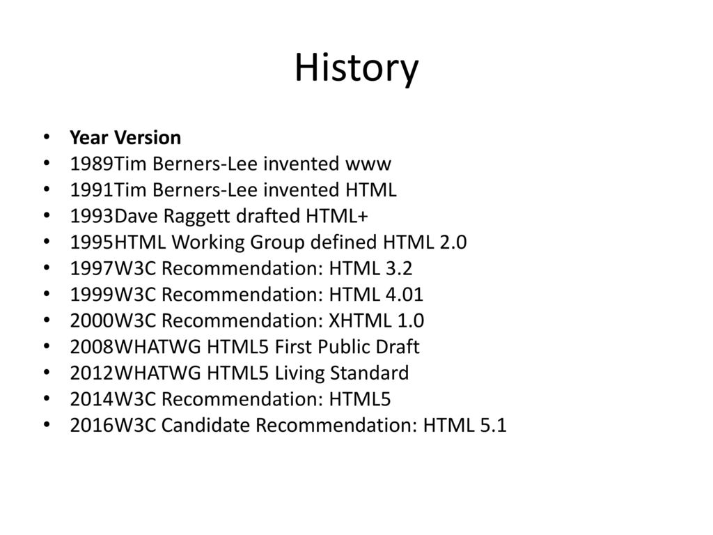

In 1980, physicist Tim Berners-Lee, a contractor at CERN, proposed and prototyped ENQUIRE, a system for CERN researchers to use and share documents. In 1989, Berners-Lee wrote a memo proposing an Internet-based hypertext system.[3] Berners-Lee specified HTML and wrote the browser and server software in late 1990. That year, Berners-Lee and CERN data systems engineer Robert Cailliau collaborated on a joint request for funding, but the project was not formally adopted by CERN. In his personal notes of 1990, Berners-Lee listed "some of the many areas in which hypertext is used"; an encyclopedia is the first entry.[4] The first publicly available description of HTML was a document called "HTML Tags",[5] first mentioned on the Internet by Tim Berners-Lee in late 1991.[6][7] It describes 18 elements comprising the initial, relatively simple design of HTML. Except for the hyperlink tag, these were strongly influenced by SGMLguid, an in-house Standard Generalized Markup Language (SGML)-based documentation format at CERN. Eleven of these elements still exist in HTML 4.[8] HTML is a markup language that web browsers use to interpret and compose text, images, and other material into visible or audible web pages. Default characteristics for every item of HTML markup are defined in the browser, and these characteristics can be altered or enhanced by the web page designer's additional use of CSS. Many of the text elements are mentioned in the 1988 ISO technical report TR 9537 Techniques for using SGML, which describes the features of early text formatting languages such as that used by the RUNOFF command developed in the early 1960s for the CTSS (Compatible Time-Sharing System) operating system. These formatting commands were derived from the commands used by typesetters to manually format documents. However, the SGML concept of generalized markup is based on elements (nested annotated ranges with attributes) rather than merely print effects, with separate structure and markup. HTML has been progressively moved in this direction with CSS.
HTML 2 November 24, 1995 HTML 2.0 was published as RFC 1866. Supplemental RFCs added capabilities: November 25, 1995: RFC 1867 (form-based file upload) May 1996: RFC 1942 (tables) August 1996: RFC 1980 (client-side image maps) January 1997: RFC 2070 (internationalization) HTML 3 January 14, 1997 HTML 3.2[15] was published as a W3C Recommendation. It was the first version developed and standardized exclusively by the W3C, as the IETF had closed its HTML Working Group on September 12, 1996.[16] Initially code-named "Wilbur",[17] HTML 3.2 dropped math formulas entirely, reconciled overlap among various proprietary extensions and adopted most of Netscape's visual markup tags. Netscape's blink element and Microsoft's marquee element were omitted due to a mutual agreement between the two companies.[13] A markup for mathematical formulas similar to that of HTML was standardized 14 months later in MathML. HTML 4 December 18, 1997 HTML 4.0[18] was published as a W3C Recommendation. It offers three variations: Strict, in which deprecated elements are forbidden Transitional, in which deprecated elements are allowed Frameset, in which mostly only frame related elements are allowed. Initially code-named "Cougar",[17] HTML 4.0 adopted many browser-specific element types and attributes, but also sought to phase out Netscape's visual markup features by marking them as deprecated in favor of style sheets. HTML 4 is an SGML application conforming to ISO 8879 – SGML.[19] April 24, 1998 HTML 4.0[20] was reissued with minor edits without incrementing the version number. December 24, 1999 HTML 4.01[21] was published as a W3C Recommendation. It offers the same three variations as HTML 4.0 and its last errata[22] were published on May 12, 2001. May 2000 ISO/IEC 15445:2000[23] ("ISO HTML", based on HTML 4.01 Strict) was published as an ISO/IEC international standard.[24] In the ISO, this standard is in the domain of the ISO/IEC JTC 1/SC 34 (ISO/IEC Joint Technical Committee 1, Subcommittee 34 – Document description and processing languages).[23] After HTML 4.01, there were no new versions of HTML for many years, as the development of the parallel, XML-based language XHTML occupied the W3C's HTML Working Group. HTML 5 Main article: HTML5 October 28, 2014 HTML5[25] was published as a W3C Recommendation.[26] November 1, 2016 HTML 5.1[27] was published as a W3C Recommendation.[28][29] December 14, 2017 HTML 5.2[30] was published as a W3C Recommendation.[31][32]
